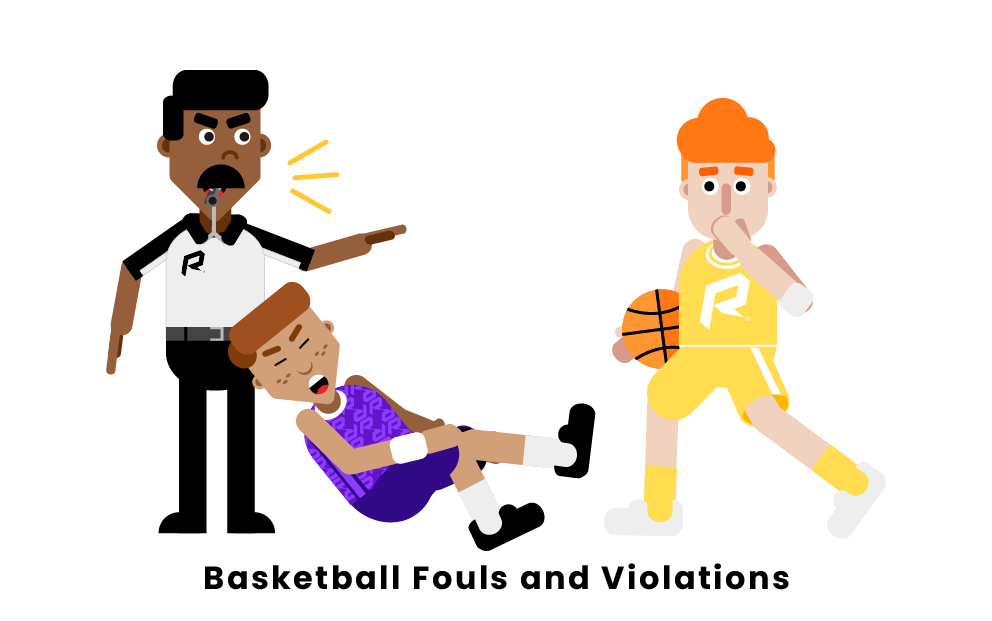

General Basketball Rules
-
The 3-Point Line

Any shot taken within the 3 point line counts as 2 points
and any shot taken outside the 3 point line (as long as the shot is taken within the court) counts as 3 points -
Ball Out of Bounds

good summary of out of bounds rules here
-
Only 10 players on the court
5 players on each team
-
illegal contact results in foul
picture from here
when the defensive side commits a foul, the attacking side gets a free throw shot.
when the attacking side commits a foul, it results in a turnover